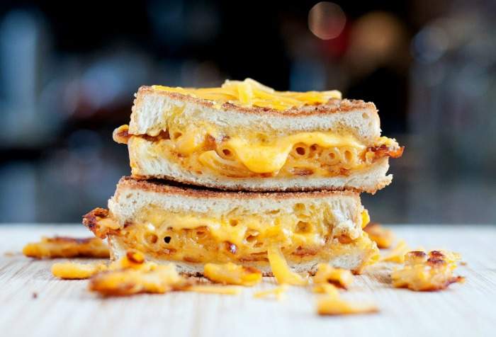
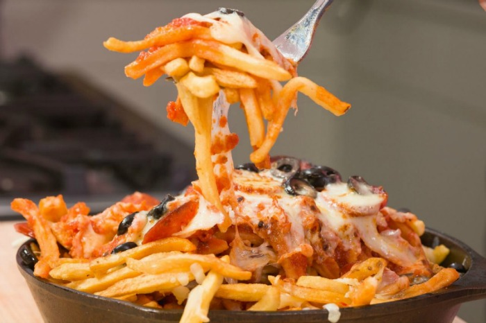

<h2> You can't buy happiness but you can buy our beer
  <p>and our food and that's almost the same thing.</h2></p>

<!-- The carousel will fill its container. Be sure to create a container that will match your image size. Here, I create a col-6 container for the carousel, since my images are about the right proportions for that. -->
<div class="row">
  <div class="col-md-9">
    <!-- Carousel code starts here -->
    <div id="carousel-example-generic" class="carousel slide" data-ride="carousel">
      <!-- Indicators -->
      <!-- These add the little "bullets" at the bottom of the show, indicating how many slides there are, and which slide is being displayed. If you add a slide to the initial 3, add an indicator. -->
      <ol class="carousel-indicators">
        <li data-target="#carousel-example-generic" data-slide-to="0" class="active"></li>
        <li data-target="#carousel-example-generic" data-slide-to="1"></li>
        <li data-target="#carousel-example-generic" data-slide-to="2"></li>
      </ol>
      <!-- Wrapper for slides -->
      <div class="carousel-inner" role="listbox">
        <div class="item active">
          
          <div class="carousel-caption">
            Grilled Mac & Cheese
          </div>
        </div>
        <div class="item">
          
          <div class="carousel-caption">
            Pizza French Fries
          </div>
        </div>
        <div class="item">
          
          <div class="carousel-caption">
          Buffalo Chicken Dip
          </div>
        </div>
      <!-- Add any additional slides here, before the "carousel-inner" div closes. Slides will in order of their position here, top first, bottom last. -->

    </div>

    <!-- Controls. Leave these alone. -->
    <a class="left carousel-control" href="#carousel-example-generic" role="button" data-slide="prev">
      <span class="glyphicon glyphicon-chevron-left" aria-hidden="true"></span>
      <span class="sr-only">Previous</span>
    </a>
    <a class="right carousel-control" href="#carousel-example-generic" role="button" data-slide="next">
      <span class="glyphicon glyphicon-chevron-right" aria-hidden="true"></span>
      <span class="sr-only">Next</span>
    </a>
  </div>
</div>
</div>
